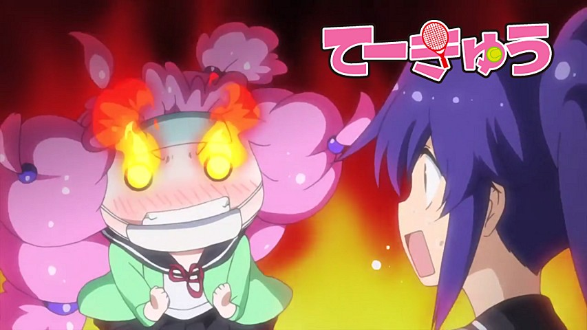

Teekyuu Saison 5 Ep 9 à 12 vostfr

Episode 09 : | |
Episode 10 : | |
Episode 11 : | |
Episode 12 : | |
Bonjour à tous,
Voici la fin de la saison 5 de Teekyuu, mais il y a encore la 6 et la 7 à suivre!
Je vous donne donc rendez-vous bientôt pour le début de la saison 6, peut-être avec un petit délai le temps de me réorganiser.
Et désolé pour l'édit pourri du dernier épisode, je ne suis pas spécialiste du tracking vidéo ;)
Bonne rigolade!
Téléchargements et streaming
Episode 09 : | |
Episode 10 : | |
Episode 11 : | |
Episode 12 : | |